遗忘-漂移困境：长视频生成的两难
自回归视频扩散模型正在向实时长视频生成迈进，但现有方法面临一个根本性的两难困境。Context Forcing（UC Merced, University of Waterloo, Netmind.AI, M-A-P）将这一困境精确地诊断为遗忘-漂移困境（Forgetting-Drifting Dilemma），并提出了系统性的解决方案。
问题根源：学生-教师不匹配
当前主流方法（Self-Forcing、LongLive等）采用短上下文教师监督长上下文学生的训练范式。教师模型仅有 5 秒的上下文窗口，却要指导执行长 rollout 的学生模型。这种结构性不匹配导致教师无法感知长程时间依赖，从根本上限制了学生可学习的上下文长度。
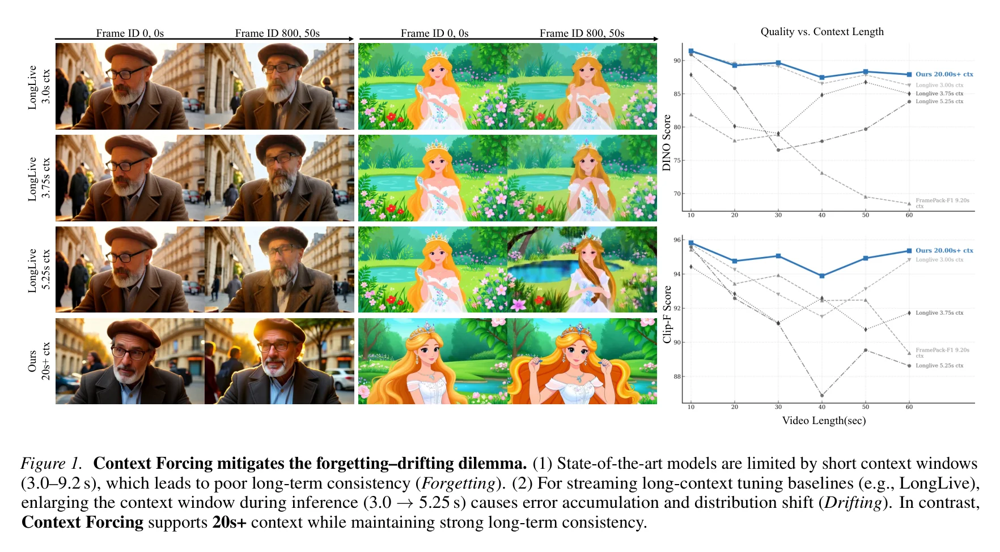
遗忘 vs 漂移：不可兼得的两难
遗忘（Forgetting）
短记忆窗口策略
限制模型使用短上下文窗口（3-9.2s），最小化误差累积。但代价是模型在长 rollout 过程中丢失之前 subjects 和 scenes 的信息，导致身份漂移和场景不一致。
漂移（Drifting）
长上下文策略
保持长上下文以保留身份信息。但模型暴露于自身累积误差，且缺乏能纠正这些长期偏差的教师监督，导致视频分布逐渐偏离真实流形。
SVG 可视化：遗忘-漂移困境的本质。短窗口保持质量但丢失历史（遗忘），长窗口保留身份但累积误差（漂移）。Context Forcing 通过长上下文教师突破了这一困境。
根因在于监督信号的信息瓶颈。短上下文教师（5s窗口）在计算梯度时无法感知 5s 之前的历史信息，因此无法为学生提供关于长程时间依赖的任何指导。即使学生执行 20s 的长 rollout，教师的监督信号仍然只覆盖最后 5s——这意味着学生模型的可学习上下文长度被硬性限制在教师窗口大小。这不是工程问题，而是结构性信息论限制。
三种训练范式对比
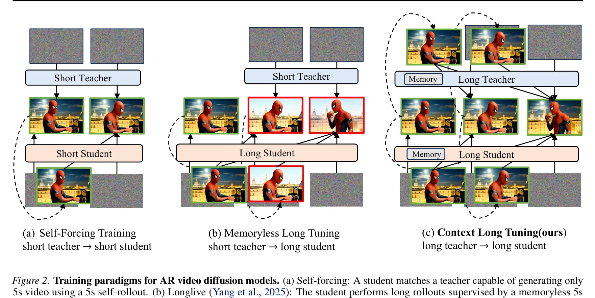
(a) Self-Forcing
短教师 → 短学生
5s rollout，5s监督。匹配但受限于短上下文，无法生成长视频。
(b) LongLive
短教师 → 长学生
教师看不到长历史 → 学生-教师不匹配。扩大上下文窗口导致漂移。
(c) Context Forcing (Ours)
长教师 → 长学生
教师感知完整历史 → 消除不匹配。20s+ 有效上下文。
现有方法的共同假设是：教师模型越大越好、越准越好，但上下文长度不重要。Context Forcing 挑战了这一假设——证明了教师的上下文长度与教师的参数量和质量同等重要。这开辟了一个新的设计维度：不仅要构建更好的短窗口教师，还要构建能感知长程依赖的教师。
Context Forcing：长教师监督长学生
Context Forcing 的核心贡献是一个简洁而强大的训练框架：用长上下文教师蒸馏长上下文学生。本章详细解析其理论基础和训练流程。
2.1 全局目标分解
目标是训练一个因果视频扩散模型 $p_\theta(X_{1:N})$ 匹配真实数据分布 $p_{\text{data}}(X_{1:N})$，其中 $N$ 跨越数十到数百秒。通过 KL 散度的链式法则，全局目标分解为两个子目标：
这一分解直接启发了两阶段课程学习：Stage 1 优化 $\mathcal{L}_{\text{local}}$（局部分布匹配），Stage 2 优化 $\mathcal{L}_{\text{context}}$（上下文分布匹配）。
2.2 Stage 1：局部分布匹配（$\mathcal{L}_{\text{local}}$）
第一阶段在短窗口（1-5秒）上热身因果学生，使用标准 DMD 框架匹配短窗口分布：
其中 $s_\theta$ 和 $s_T$ 分别是学生和教师的 score 函数。此阶段确保 $p_\theta(X_{1:k}) \approx p_{\text{data}}(X_{1:k})$，为 Stage 2 提供高质量上下文。
2.3 Stage 2：上下文分布匹配（$\mathcal{L}_{\text{context}}$ / CDMD）
这是论文的核心创新。Stage 2 优化 $\mathcal{L}_{\text{context}}$，需要匹配学生的续写分布 $p_\theta(\cdot|X_{1:k})$ 与真实数据续写 $p_{\text{data}}(\cdot|X_{1:k})$。但 $p_{\text{data}}$ 对于学生生成的任意上下文不可直接访问。
解决方案：使用预训练的上下文教师 $T$，提供可靠的代理分布 $p_T(X_{k+1:N}|X_{1:k})$。
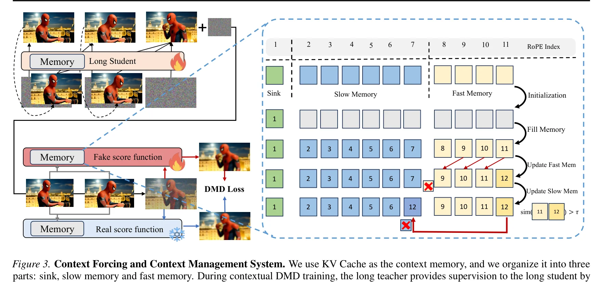
def train_cdmd_step(student, context_teacher, batch, step,
rollout_schedule):
"""
Stage 2: 上下文分布匹配蒸馏 (CDMD)
核心创新：用长上下文教师监督长上下文学生
"""
# 动态 rollout 长度（课程学习）
k_max = rollout_schedule(step) # 线性增长
k = torch.randint(k_min, k_max + 1)
# 学生 self-rollout 生成上下文
context_frames = student.generate_context(
batch["text_cond"], num_frames=k
) # X_{1:k} ~ p_theta
# 学生生成续写（随机时间步退出）
z_cont = torch.randn(batch_size, C, H, W)
x_cont = student(z_cont, condition=context_frames) # G_theta(z|X_{1:k})
# 前向扩散扰动续写
t = torch.rand(batch_size)
noise = torch.randn_like(x_cont)
x_t_cont = (1 - t) * x_cont + t * noise
# 学生 score（fake score）
score_student = student.score(x_t_cont, t, condition=context_frames)
# 长上下文教师 score（real score）——关键：教师感知完整历史
score_teacher = context_teacher.score(x_t_cont, t, condition=context_frames)
# CDMD 梯度：(s_teacher - s_student) 提供分布匹配方向
dmd_grad = score_teacher.detach() - score_student.detach()
# Generator loss：通过梯度反传更新学生
gen_loss = (x_cont * dmd_grad).sum()
# Clean context policy：上下文帧完全去噪
assert context_frames.is_fully_denoised()
return gen_lossCDMD 的关键设计是期望 $\mathbb{E}_{X_{1:k} \sim p_\theta}$ 在学生的自回归 rollout 上计算。这意味着学生是在自己生成的有瑕疵上下文中学习，而非在干净的 ground-truth 上下文中学习。这直接消除了 exposure bias——学生在训练时就已经学会了从自身累积误差中恢复，而不是天真地假设输入总是完美的。
2.4 长自 Rollout 课程学习
直接用大 $k$ 值训练会导致严重的分布漂移（学生早期 rollout 质量太差）。解决方案是动态 horizon 调度：rollout 长度随训练步数线性增长。
SVG 可视化：长自 Rollout 课程学习。Rollout 长度从短窗口逐步增长到完整序列长度，避免早期训练不稳定。
Self-Forcing 通常在随机时间步退出以确保所有扩散步都有监督。Context Forcing 采用解耦策略：上下文帧 $X_{1:k}$ 完全去噪（clean context），目标帧 $X_{k+1:N}$ 随机时间步退出（保留全扩散步监督）。这种解耦确保：(1) 上下文帧质量高，与教师训练分布对齐；(2) 目标帧仍有充分的扩散步监督覆盖。
Slow-Fast Memory：上下文管理系统
支持 20s+ 上下文的核心挑战是计算效率。随着序列长度线性增长，注意力计算的二次复杂度使长上下文训练变得不可行。Context Forcing 设计了一套受双过程记忆理论启发的 KV Cache 管理系统。
3.1 三层缓存分区
总缓存 $M$ 分为三个功能组件：
Attention Sink (S)
N_s = 3 个 token
保留初始 token 以稳定注意力分布，遵循 StreamingLLM 的发现。这些 token 作为注意力的"锚点"，防止注意力权重崩溃。
Slow Memory (C_slow)
N_c = 12 个 token
长期缓冲区，存储高熵关键帧。仅在检测到显著新信息时更新。通过惊讶度策略选择性巩固。
Fast Memory (L_fast)
N_l = 6 个 token
滚动 FIFO 队列，捕获即时局部上下文。最新的 N_l 个 token 始终保留，确保短期连贯性。
SVG 可视化：Slow-Fast Memory 架构和惊讶度巩固策略。通过 key vector 相似度判断信息价值，高惊讶度 token 被巩固到长期缓冲区。
3.2 惊讶度巩固策略
当生成新 token $x_t$ 并加入 Fast Memory 后，通过比较当前 token 与前一个 token 的 key vector 相似度来评估信息价值：
其中 $\tau = 0.95$ 是相似度阈值。高惊讶度 token（$\text{sim} < \tau$）表示显著的状态转换或视觉变化，被提升到 Slow Memory；低惊讶度 token 表示冗余信息，直接丢弃。
3.3 有界位置编码
标准自回归模型的位置索引无界增长（$p_t = t \to \infty$），导致长序列上的分布漂移。Context Forcing 采用有界位置索引，所有 token 的 RoPE 位置约束到固定范围 $\Phi$：
这创建了一个静态注意力窗口：最近历史（Fast）通过高索引滑动，显著历史（Slow）压缩到低索引，从而稳定长序列上的注意力。
class SlowFastMemory:
"""
Slow-Fast Memory 上下文管理系统
三层缓存：Attention Sink + Slow Memory + Fast Memory
"""
def __init__(self, Ns=3, Nc=12, Nl=6, tau=0.95):
self.sink = deque(maxlen=Ns) # Attention Sink
self.slow_memory = deque(maxlen=Nc) # 长期缓冲区
self.fast_memory = deque(maxlen=Nl) # 滚动 FIFO
self.tau = tau # 相似度阈值
def update(self, new_token, key_vector):
"""生成新 token 后更新缓存"""
# 1. Fast Memory 始终添加最新 token
prev_key = self.fast_memory[-1].key if self.fast_memory else None
self.fast_memory.append(Token(new_token, key_vector))
# 2. 惊讶度巩固：决定是否提升到 Slow Memory
if prev_key is not None:
similarity = cosine_similarity(key_vector, prev_key)
if similarity < self.tau: # 高惊讶度
self.slow_memory.append(Token(new_token, key_vector))
# 低惊讶度：仅保留在 Fast Memory，不巩固
def get_kv_cache(self):
"""获取完整 KV Cache 用于注意力计算"""
all_tokens = list(self.sink) + \
list(self.slow_memory) + \
list(self.fast_memory)
# 分配有界位置编码
positions = []
for i, token in enumerate(all_tokens):
if i < len(self.sink):
positions.append(i) # Sink: [0, Ns-1]
elif i < len(self.sink) + len(self.slow_memory):
positions.append(len(self.sink) + (i - len(self.sink))) # Slow
else:
positions.append(len(self.sink) + len(self.slow_memory) + \
(i - len(self.sink) - len(self.slow_memory))) # Fast
return all_tokens, positions关键在于信息压缩而非简单截断。21 个 latent frame 的总缓存（$N_s + N_c + N_l = 3 + 12 + 6 = 21$）通过惊讶度巩固，保留了最具信息量的 token。在 2-chunk 间隔实施巩固时，仅保留第一个 latent，有效将上下文扩展到 20s+。这意味着信息密度而非物理长度决定了有效上下文——Slow Memory 中的 12 个高熵关键帧可能比 12 个连续帧携带更多的长期信息。
ERFT：鲁棒上下文教师训练
CDMD 框架的一个关键假设是：教师在学生生成的上下文上仍能提供可靠监督。但标准训练条件下，教师仅在干净的 ground-truth 上下文中训练，而在推理时面对的是学生生成的有瑕疵上下文——这就是exposure bias。
4.1 Exposure Bias 的具体表现
标准训练条件让教师模型学习 $p_T(\cdot|X_{1:k}^{\text{clean}})$，但推理时教师面对的是 $X_{1:k}^{\text{student}} = X_{1:k}^{\text{clean}} + \text{accumulated errors}$。当学生上下文存在累积误差时，教师的续写质量会急剧下降，导致 CDMD 监督信号不可靠。
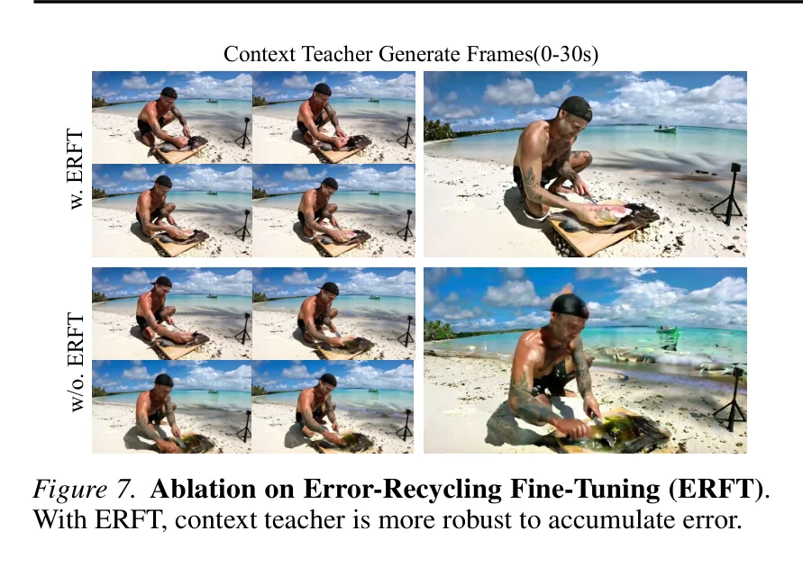
4.2 Error-Recycling Fine-Tuning (ERFT)
ERFT 的核心思想：在教师训练过程中注入真实的累积误差，使教师学会从学生漂移中恢复。
其中 $e_{\text{drift}}$ 从历史模型残差库中采样，$\mathbf{I}$ 是 Bernoulli 指示器。教师被优化为从扰动上下文 $\tilde{X}_{1:k}$ 恢复正确速度 $v_{\text{target}}$。
def erft_training_step(context_teacher, batch, error_bank):
"""
Error-Recycling Fine-Tuning (ERFT)
向教师上下文注入真实累积误差，使其学会从漂移中恢复
"""
clean_context = batch["clean_frames"] # X_{1:k} (ground truth)
target_velocity = batch["target_v"] # v_target
# 从历史残差库采样累积误差
e_drift = error_bank.sample(clean_context.shape)
# Bernoulli 指示器：随机决定是否注入误差
I = torch.bernoulli(torch.ones(batch_size) * 0.5)
I = I.view(-1, 1, 1, 1) # broadcast
# 构造扰动上下文
perturbed_context = clean_context + I * e_drift # X~ = X + I * e_drift
# 教师从扰动上下文中预测速度
predicted_v = context_teacher(perturbed_context, batch["text_cond"])
# 损失：恢复正确速度
loss = F.mse_loss(predicted_v, target_velocity)
# 更新残差库（用当前教师的误差）
with torch.no_grad():
current_error = context_teacher(clean_context) - target_velocity
error_bank.update(current_error) # 回收当前误差
return loss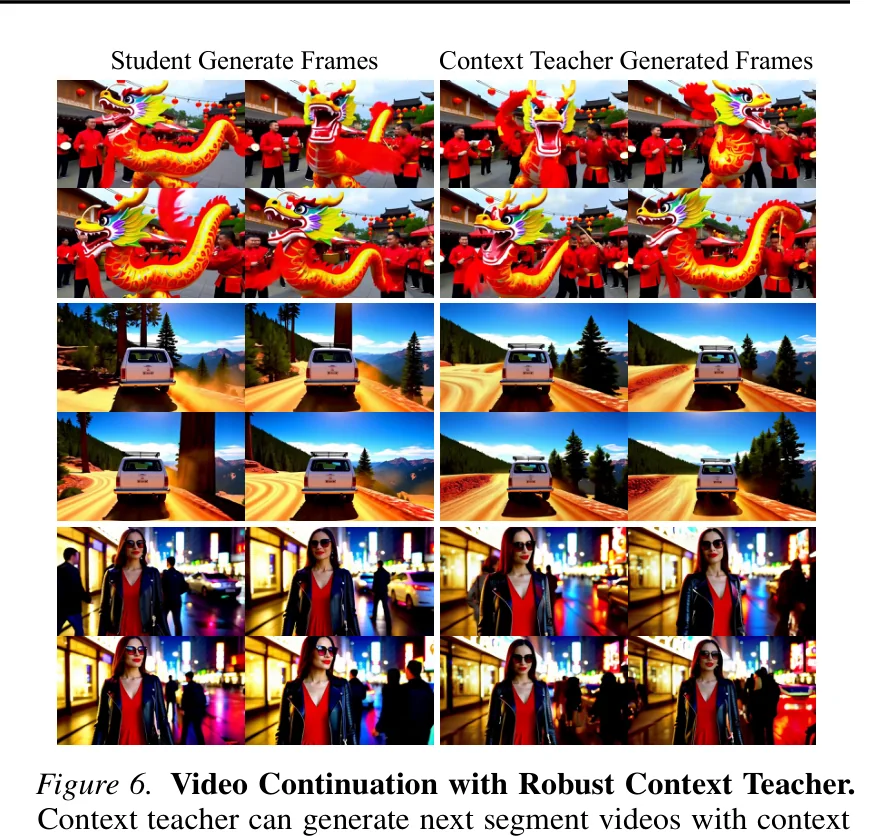
ERFT 不是一次性的数据增强，而是一个闭环回收系统。每次训练迭代中，教师不仅在注入的旧误差上训练，还产生新的误差样本加入残差库。这意味着误差库会随着训练逐步演化，覆盖教师实际可能遇到的误差分布。这种设计确保了教师在推理时面对学生真实累积误差时，已经具备了从中恢复的能力——这是 CDMD 假设 1（教师可靠性）的经验基础。
实验结果与消融研究
5.1 实验设置
基础模型采用 Wan2.1-T2V-1.3B，KV cache 配置为 $N_s=3, N_c=12, N_l=6$，在 Sekai 和 Ultravideo 数据集上训练。
5.2 60 秒视频一致性评估
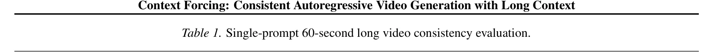
| 模型 | 上下文长度 | DINO@30s | DINO@60s | CLIP-F@30s | CLIP-F@60s | CLIP-T@60s |
|---|---|---|---|---|---|---|
| LongLive | 3.0s | 89.12 | 86.26 | 92.80 | 94.82 | 37.13 |
| Infinity-RoPE | 1.5s | 85.37 | 83.72 | 91.13 | 88.88 | 32.28 |
| FramePack-F1 | 9.2s | 78.84 | 68.50 | 93.92 | 89.36 | 32.30 |
| Context Forcing (Ours) | 20s+ | 89.66 | 87.89 | 95.05 | 95.35 | 37.66 |
数据揭示了一个关键规律：上下文长度增加并不自动提升一致性。FramePack-F1 拥有 9.2s 的上下文，但在 60s 评估中一致性最差（DINO@60s: 68.50），甚至不如 3.0s 的 LongLive（86.26）。原因在于更长的上下文暴露了更多累积误差。Context Forcing 的成功不仅来自更长的上下文，更来自通过 ERFT 和 CDMD 确保长上下文中的监督质量。
5.3 全面定量比较
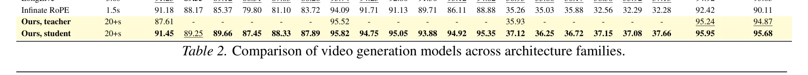
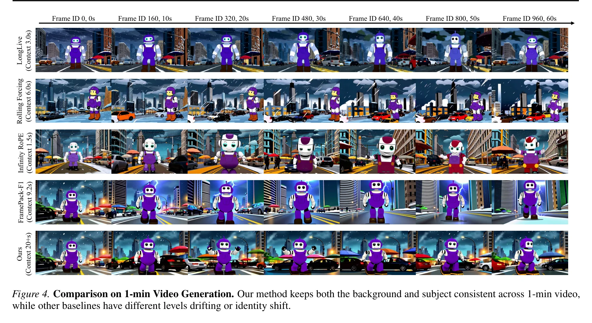
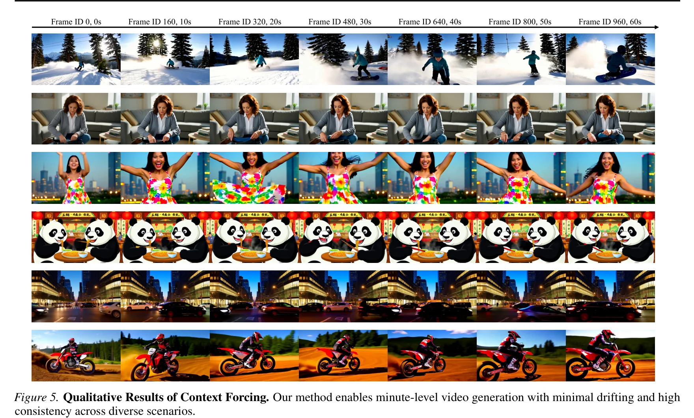
5.4 消融研究
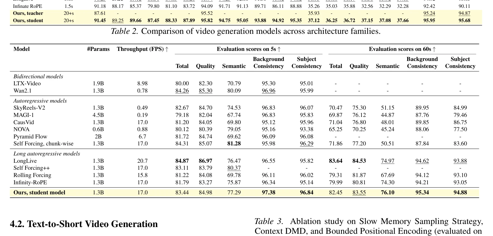
消融一：Slow Memory 采样策略
| 策略 | Total Score | Background Consistency | Subject Consistency |
|---|---|---|---|
| Uniform sample, interval 1 | 80.82 | 92.45 | 92.10 |
| Uniform sample, interval 2 | 81.11 | 93.12 | 92.85 |
| Surprisal-based (Ours) | 82.45 | 95.34 | 94.88 |
惊讶度巩固策略相比均匀采样提升显著：Background Consistency +2.22，Subject Consistency +2.03。这证明了信息量感知的记忆管理优于简单的均匀采样。
消融二：Context DMD 的贡献
| 配置 | Total Score | Semantic Score | Dynamic Degree |
|---|---|---|---|
| w/o Context DMD | 80.36 | 72.70 | 48.12 |
| w/ Context DMD (Ours) | 82.45 | 76.10 | 58.26 |
移除 Context DMD 导致语义分数和时间一致性均退化，凸显了上下文分布匹配在长视频生成中的关键作用。
消融三：有界位置编码
| 配置 | Background Consistency | Subject Consistency |
|---|---|---|
| w/o Bounded PE | 84.68 | 79.24 |
| w/ Bounded PE (Ours) | 95.34 | 94.88 |
移除有界位置编码导致灾难性退化（Background -10.66，Subject -15.64），证明了位置编码约束对长序列稳定性至关重要。
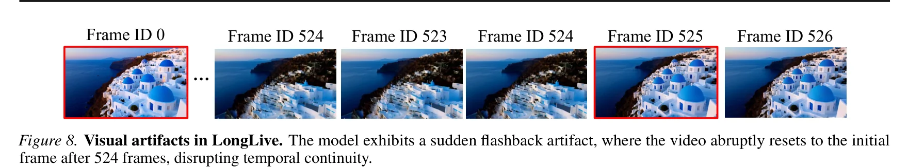
三个消融实验揭示了一个关键发现：每个组件单独移除都导致显著退化，但三者协同的效果远大于各自贡献之和。有界位置编码提供结构稳定性（防止位置漂移），惊讶度巩固提供信息效率（保留最有价值的 token），Context DMD 提供监督质量（匹配长程分布）。三者分别解决了长上下文的三个不同层面的挑战。
局限与未来方向
6.1 当前局限
记忆压缩仍有优化空间
当前基于惊讶度的巩固策略使用固定阈值 $\tau=0.95$，但不同视频内容的最优阈值可能不同。固定策略可能在某些场景下过度压缩或保留冗余信息。
基础模型规模限制
实验基于 Wan2.1-T2V-1.3B。更大规模的模型（如 14B）可能展现不同的上下文利用模式和一致性表现。方法的可扩展性需要进一步验证。
诚实评估：论文坦承当前记忆压缩策略在信息密度方面仍有优化空间。虽然 Context Forcing 将有效上下文从 3-9.2s 扩展到 20s+，但与理论上的无限上下文相比，20s 仍然有限。进一步的突破可能需要可学习的上下文压缩机制。
6.2 未来方向
当前惊讶度巩固使用固定的 key-vector 相似度度量。一个自然的扩展是让模型学习什么信息值得保留——通过端到端训练的注意力网络预测每个 token 的"保留价值"。这可能实现比固定阈值更精细的信息过滤。
不同视频内容（静态风景 vs 快速运动）需要不同的记忆分配策略。自适应机制可以根据当前生成内容的复杂度动态调整 $N_s, N_c, N_l$ 的分配，在简单场景中节省缓存，在复杂场景中分配更多长期记忆。
Context Forcing 的长教师-长学生范式是否适用于音频生成、3D 场景生成等其他需要长程一致性的领域？这些领域的"上下文"定义不同（时间 vs 空间），Slow-Fast Memory 架构需要重新设计，但核心思想——长上下文教师消除学生-教师不匹配——可能具有普适性。
自主科研问题
基于对 Context Forcing 的深入分析，我们提出以下五个未解问题，每个都附有理论分析和可能的研究方向。
惊讶度阈值 $\tau$ 的最优值是否随视频内容动态变化？
当前使用固定 $\tau=0.95$，但静态风景视频和快速运动视频的信息分布截然不同。一个自适应方案可能：(1) 根据最近 $N_l$ 个 token 的相似度分布动态调整 $\tau$，(2) 使用强化学习或元学习学习最优巩固策略，(3) 设计内容感知的阈值调度。关键问题是：自适应策略的计算开销是否被信息质量提升所补偿？
ERFT 的残差库大小和采样策略对教师鲁棒性的影响如何量化？
论文未详细讨论残差库的容量、采样分布和更新策略。过小的库可能无法覆盖误差分布的多样性，过大的库可能引入过多噪声。一个系统性的研究可以：(1) 测量库大小对教师鲁棒性的敏感性，(2) 比较不同采样策略（均匀 vs 按频率 vs 按幅度），(3) 分析库的"覆盖度"与续写质量的相关性。
Slow-Fast Memory 的固定容量分配是否最优？$N_s + N_c + N_l = 21$ 的约束下如何最优分配？
当前配置 $N_s=3, N_c=12, N_l=6$ 是经验选择。理论上的最优分配可能取决于：(1) 视频的运动复杂度（快速运动需要更多 Fast Memory），(2) 场景切换频率（频繁切换需要更多 Slow Memory），(3) 生成长度（更长视频可能需要更多 Slow Memory）。是否可以设计一个自动搜索最优分配的框架？
Context Forcing 的 CDMD 框架能否与 Consistency Model（非蒸馏）结合实现更高效的训练？
当前使用 DMD（score distillation）框架。Consistency Model（Song et al., 2023）通过直接学习一致性函数而非通过 score 匹配，可能提供更高效的训练路径。关键问题是：(1) 因果 AR 设置下 CD 的收敛性是否成立？(2) 长上下文条件是否引入了新的不稳定性？(3) CD 的 mode-covering 行为在长序列生成中是否比 DMD 的 mode-seeking 更鲁棒（类似于 Causal Forcing++ 的发现）？
能否设计"无上下文教师"的 Context Forcing——直接从数据学习长程依赖？
当前框架依赖预训练的上下文教师提供长程监督。能否绕过教师模型，直接从数据的长程结构学习？一个可能方向是：使用视频数据自身的远距离帧对作为"自然一致性对"，通过对比学习或自监督预训练建立长程依赖模型。另一个方向是利用因果推断理论，从观测数据中识别和建模长程因果关系。关键问题是：无教师方法能否达到教师指导方法的质量，特别是在 60 秒评估中的长期一致性？
总结
Context Forcing 的核心贡献可以浓缩为一句话：用长上下文教师蒸馏长上下文学生，通过 Slow-Fast Memory 架构使 20s+ 有效上下文成为可能。
论文的逻辑链清晰而有力：
(1) 问题诊断：精确识别了遗忘-漂移困境的根因——学生-教师不匹配。短上下文教师（5s）无法为长 rollout 学生提供关于长程时间依赖的监督，这是结构性信息论限制而非工程问题。
(2) 核心框架：Context Forcing 通过两阶段课程学习（局部 DMD + 上下文 DMD）训练长上下文学生。CDMD 目标的期望在学生 rollout 上计算，直接消除 exposure bias。
(3) 上下文管理：Slow-Fast Memory 架构（Attention Sink + Slow Memory + Fast Memory）配合惊讶度巩固策略和有界位置编码，在固定 21 个 latent frame 的缓存中实现了 20s+ 的有效上下文。
(4) 教师鲁棒性：ERFT 通过注入真实累积误差训练教师从学生漂移中恢复，确保 CDMD 监督信号在长 rollout 中始终可靠。
(5) 系统成果：60 秒视频一致性评估中，DINO/CLIP-F/CLIP-T 全面领先 SOTA。有效上下文长度 20s+，是 LongLive（3s）的 6-7 倍，FramePack（9.2s）的 2 倍以上。
这些贡献构成了一个从理论洞察到系统设计的完整范式——先理解为什么现有方法在长视频生成中失败（学生-教师不匹配的诊断），再设计匹配长上下文能力的训练框架（CDMD），最后解决工程挑战（Slow-Fast Memory 和 ERFT）。这种范式对未来的长序列生成研究具有指导意义。